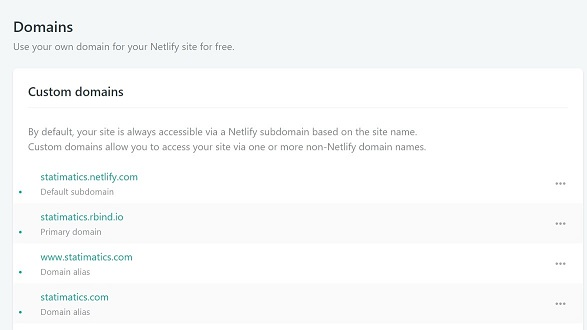
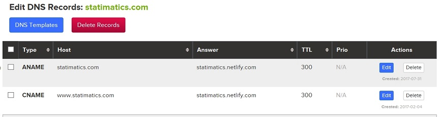

While setting up my blog to use the *.rbind.io domain name, I had to open a new issue over at rbind support Github page to request for my preferred *.rbind.io domain name. Thankfully, the support team over at rbind were fast in getting it set up and all I had to do was set the *.rbind.io domain name in my Netlify account. However, I also wanted my own top level domain name statimatics.com to point to this site while enforcing all my visitors to use HTTPS. I thought I should write about my experience in setting up the domain name of my site.
Netlify for me is the best option for deploying a blogdown site. After deploying site from Git(hub), you’ll be randomly assigned a *.netlify.com domain name which you easily change. In my case, I changed mine to statimatics.netlify.com. You can easily do this in the domain settings of your site in Netlify. Click on the tooltip to the side of the default *.netlify.com domain and select Edit site name to get the following dialogue box where you can set your preferred *.netlify.com domain name.
One of the ideas behind rbind is to have a directory of stats and data analysis websites. If you would like to use a free *.rbind.io subdomain, head over to the rbind support Github page and open a new issue and the team will get it set up for you in no time. Once that’s done, you have to point your new rbind subdomain to your site by adding it as a new custom domain in your netlify domain settings. You should also be able to set it as the primary domain if you wish.

Furthermore, I wanted in addition to the rbind subdomain name, that my toplevel domain, statimatics.com (which I’ve bought from domain name registrar) also point to my website. To do this, I had to create a CNAME record in the DNS records of my domain name (on the website of my registrar) that points to my Netlify site as shown below:

As seen above, I also created an A record that points statimatics.com (without the www. prefix) to my Netlify site. This is to ensure my website can be assessed with both statimatics.com and www.statimatics.com.
After creating these DNS records, I then added statimatics.com and www.statimatics.com as domain aliases in the domain settings of my netlify site as seen above in the second figure.
After configuring and adding all domain aliases, it is advicable to enable HTTPS on your Netlify site. Just enable the automatic TLS certificates for it in the domain settings of your site (Domain management -> HTTPS). However, I do not recommend forcing HTTPS using netlify’s Force HTTPS feature as this ensures that your site can’t be assessed over insecure HTTP. What I recommend is to redirect all http links to a primary https link using 301 redirects
One of the implications of having many names pointed to a site is that it tends to confuse the user as to which of them is the actual or primary domain name. I want the primary domain of my site to be statimatics.rbind.io even though other names point to the same site. So what I want is to set up 301 redirects to redirect all other names to my preferred primary domain name statimatics.rbind.io. This ensures that statimatics.rbind.io always shows up in the address bar of users regardless of which link they used to access my site.
Also, since I want my site to be accessed using HTTPS, I redirected all HTTP links to HTTPS. You can set up redirects by creating a file named _redirects in the static folder of your blogdown site and populating it with the redirect rules. Below, I redirect all possible name/link of my site to my preferred which is https://statimatics.rbind.io.
http://statimatics.rbind.io/* https://statimatics.rbind.io/:splat 301!
http://statimatics.netlify.com/* https://statimatics.rbind.io/:splat 301!
https://statimatics.netlify.com/* https://statimatics.rbind.io/:splat 301!
http://statimatics.com/* https://statimatics.rbind.io/:splat 301!
https://statimatics.com/* https://statimatics.rbind.io/:splat 301!
http://www.statimatics.com/* https://statimatics.rbind.io/:splat 301!